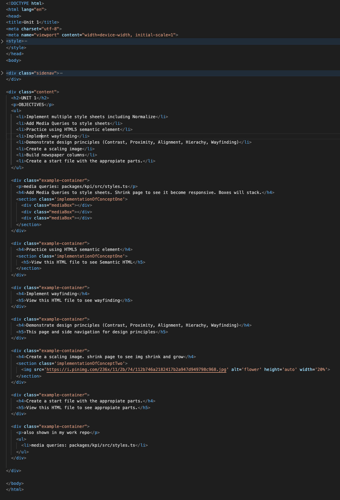

UNIT 1
OBJECTIVES
- Implement multiple style sheets including Normalize
- Add Media Queries to style sheets
- Practice using HTML5 semantic element
- Implement wayfinding
- Demonstrate design principles (Contrast, Proximity, Alignment, Hierachy, Wayfinding)
- Create a scaling image
- Build newspaper columns
- Create a start file with the appropiate parts.
media queries: packages/kpi/src/styles.ts
Add Media Queries to style sheets. Shrink page to see it become responsive. Boxes will stack.
Practice using HTML5 semantic element
View this HTML file to see Semantic HTML
Implement wayfinding
View this HTML file to see wayfinding
Demonstrate design principles (Contrast, Proximity, Alignment, Hierachy, Wayfinding)
This page and side navigation for design principles
Create a scaling image. shrink page to see img shrink and grow
Create a start file with the appropiate parts.
View this HTML file to see appropiate parts.
also shown in my work repo
- media queries: packages/kpi/src/styles.ts